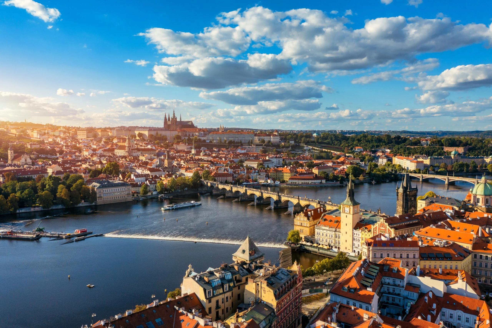
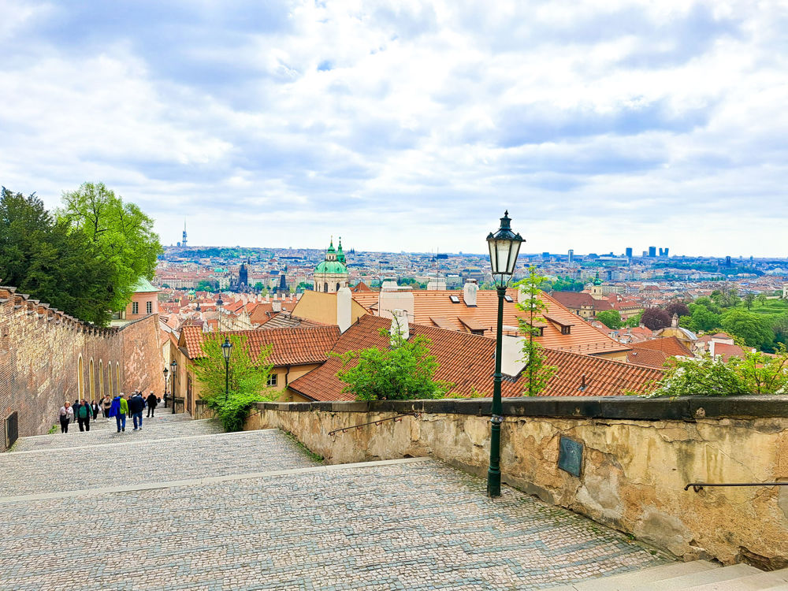
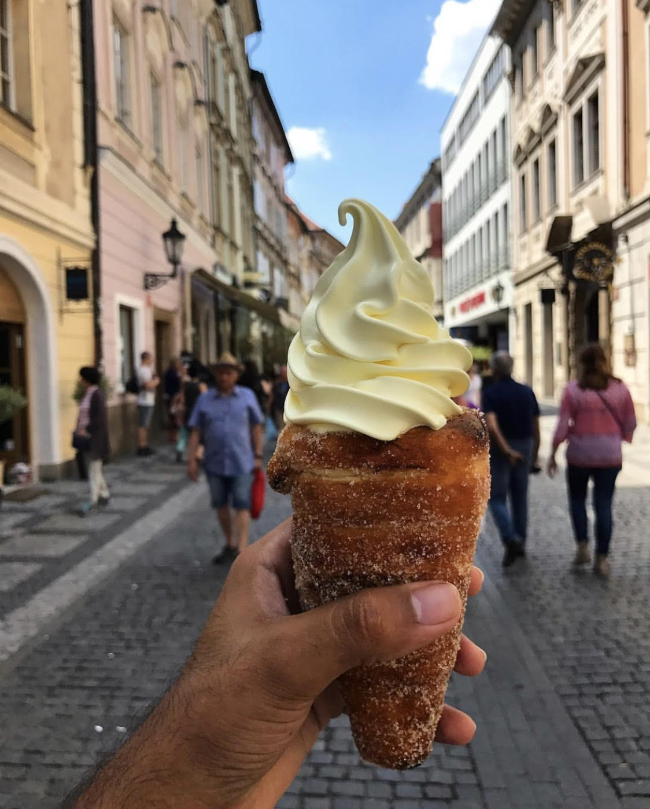

My Take
Prague feels unreal. Everywhere you look feels like a postcard, and it's one of the most visually beautiful cities you'll visit.
The best part is how easy it is — it's small, super walkable, and doesn't require a ton of planning.
Best For
- Short trips (1–2 days)
- Walking + exploring
- Budget-friendly travel
- Nightlife
What to Do
Must-See
Charles Bridge — The iconic crossing, beautiful anytime but go early to avoid crowds. Old Town Square — Tourist hub but you have to see it. Prague Castle — Walk the grounds, great views.
Experiences
Walking everywhere — The best way to see the city, you'll discover hidden streets and neighborhoods. Sunset at the castle — One of the best views in the city. Pub crawl — Super social and easy to meet people in the underground beer halls.

🌉 Walking the City
This is the best way to see Prague. You don't need Ubers — just walk and you'll find everything. The city is small enough that you can wander without getting too lost, and stumbling upon random streets, cafés, and hidden neighborhoods is genuinely where the magic happens.
🌅 Sunset at the Castle
Climbing up before it closes gives you one of the best views in the city. The whole city turns golden, and you get to see Prague from above — it's absolutely worth the walk uphill.
🎉 Pub Crawl
One of the most fun nightlife experiences — super social and easy to meet people. The underground brewery taverns have amazing Czech beer for €2–3, and the atmosphere is genuinely local-feeling even when tourists are there.

Where to Eat & Drink
Breakfast / Brunch
- Den Noc - Great breakfast spot
Casual
- Point Pizza - Good casual food
Nightlife
- Duplex - Club for late nights
- Pub crawls - Underground beer halls with amazing atmosphere
Where to Stay
Neighborhoods
Old Town — Best location, central to everything.
Anywhere central — The city is very small, so location matters less than you'd think. You can walk across Prague in about 30 minutes.
Budget Options
- Hostels: €12–18/night
- Airbnb: €20–40/night
- Budget hotels: €30–50/night

My Real Tips
- You only need 1–2 days. Prague is beautiful but small. A weekend is plenty.
- Go early to avoid crowds. Charles Bridge early morning, Old Town Square at odd hours. It's worth waking up for.
- Very affordable compared to other cities. Beer, food, accommodations — everything is cheap here.
- Nights are just as fun as daytime. The pub scene is incredible, and the city has great nightlife.
- Beer is cheaper than water. Czech beer is amazing and costs €1–3 a pint.
- Watch for pickpockets on crowded trams. Keep an eye on your belongings, especially in touristy areas.
- Walk everywhere. The city is small and walkable — no need for transportation most of the time.
Sample Weekend Plan
Friday
Arrive → dinner → drinks at an underground beer hall
Saturday
Explore → castle at sunset → pub crawl
Sunday
Coffee → walk → leave
Pro tip: Prague is best experienced by just wandering. The prettiest parts of the city aren't on the main tourist route — they're in the side streets.